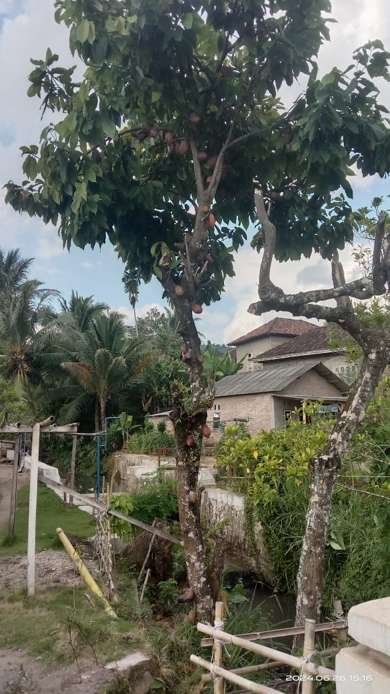
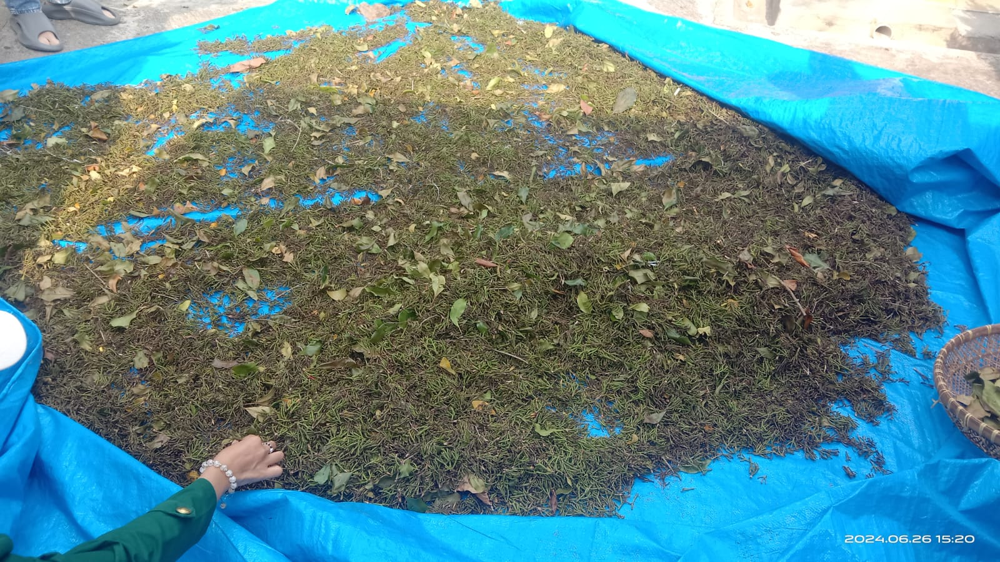
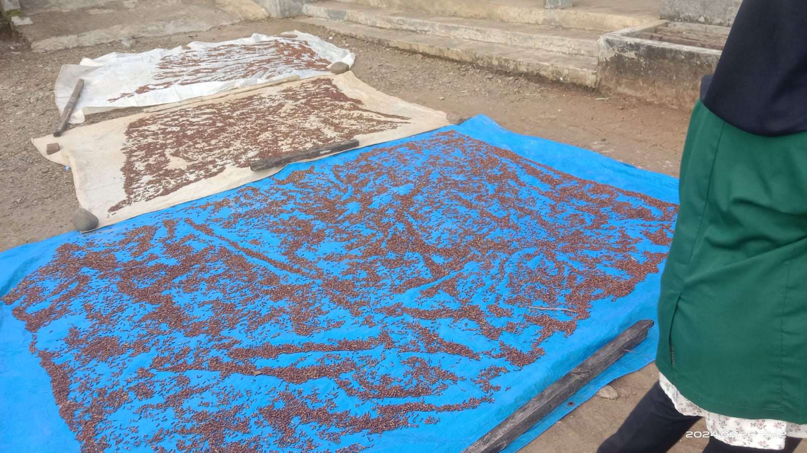
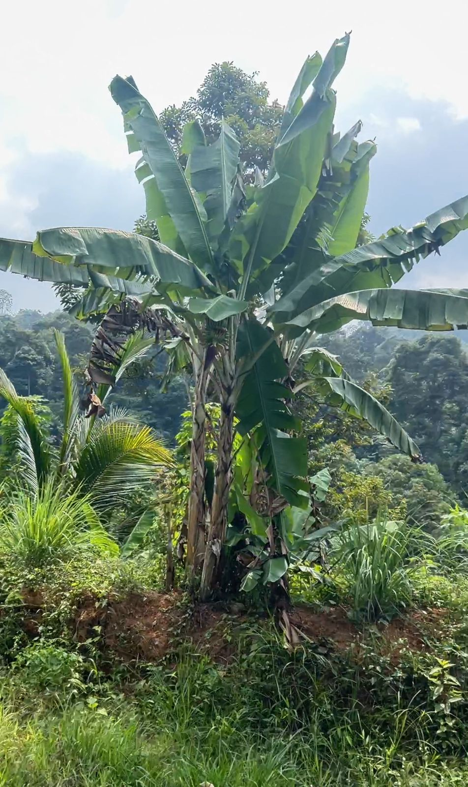
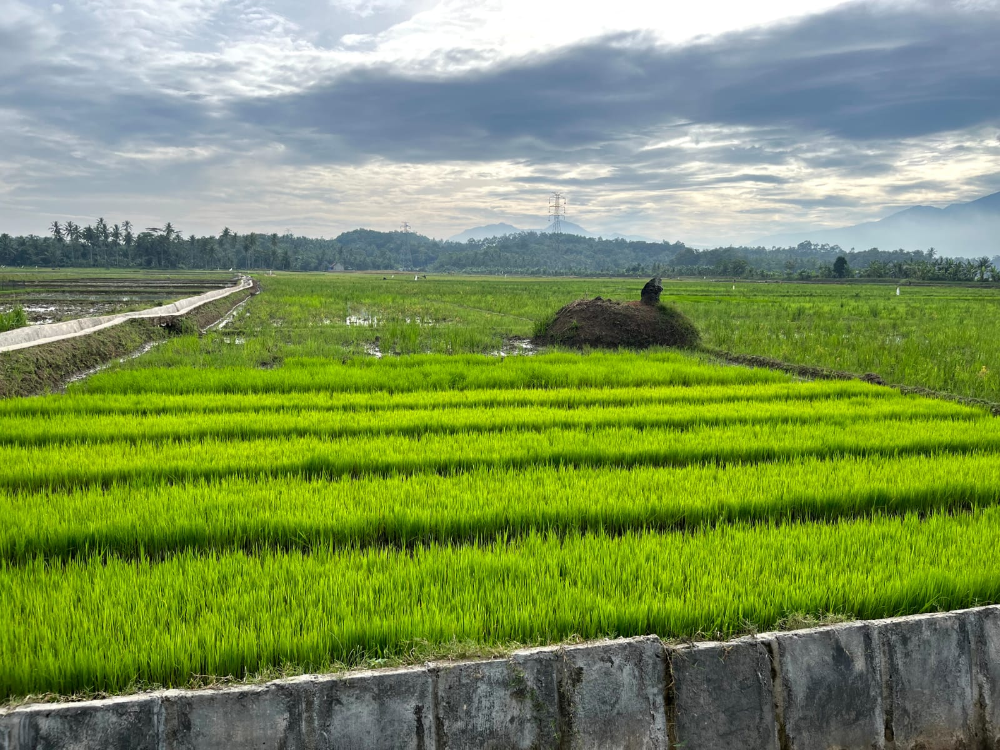

Informasi Terkait

Gambar Balai Pekon Kuripan
Pekon Kuripan merupakan salah satu dari 11 Pekon di Wilayah kecamatan Limau, yang terletak 300 meter kearah Barat dari Kota Kecamatan Limau serta memiliki 4 dusun 4 RT dan mempunyai luas wilayah seluas 556 Hektar.
Adapun Batas Pekon Kuripan adalah Sebagai berikut :
Sebelah Utara berbatasan dengan Pekon Banjar Agung, Sebelah Selatan berbatasan dengan Laut, Sebelah Timur berbatasan dengan Pekon Badak.
Iklim Desa Kuripan, sebagaimna Desa-desa lain di wilayah Indonesia mempunyai iklim musim panas dan penghujan, hal tersebut mempunyai pengaruh langsung terhadap pola tanam yang ada di Pekon Kuripan.
Potensi Pekon Kuripan
Potensi yang dimiliki Pekon Kuripan antara lain yaitu Penghasilan Pisang, Daun Katuk Yang Banyak, Lokasi Tambak, Penghasilan Cengkeh, Buah Kakao, Durian, Duku dan Penghasilan Kebun lainnya.
1. Penghasilan 1
Berikut link penjelasan terkait Potensi dari pekon Kuripan terkait kakao :
Klik Disini
2. Penghasilan 2
Berikut link penjelasan terkait potensi desa penghasilan cengkeh yang sangat subur :
Klik Disini 
3. Penghasilan 3
Berikut link penjelasan terkait potensi pekon Kuripan penghasilan Pisang :
Klik Disini
4. Penghasilan 4
Berikut link penjelasan terkait potensi Pekon Kuripan terkait pertanian Padi :
Klik Disini
Peta Desa Kuripan
Berikut peta dari lokasi Desa Kuripan, Kec. Limau, Kab. Tanggamus.